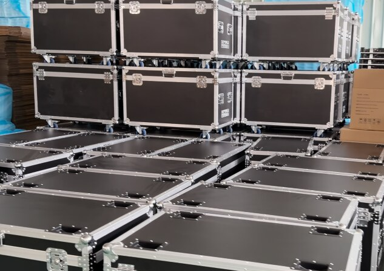
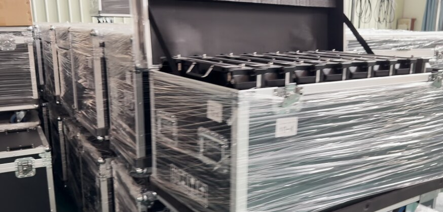

Another batch of LumProTech LED display systems has completed production and is ready for shipment. The LED cabinets and supporting equipment have been organized in reinforced flight cases to reduce impact, vibration and handling risks during long-distance transportation.

Pre-Shipment Quality Control
Reliable performance begins before the products leave our facility. Every shipment follows a controlled inspection process that includes module inspection, cabinet assembly checks, power and signal testing, display calibration, aging tests and a final visual review. This helps identify potential issues before delivery and supports smoother installation at the project site.
Secure Flight-Case Packing
Professional LED displays require more than ordinary cartons. The cabinets are stored in durable flight cases with reinforced aluminum edges, metal corners, secure latches and mobile casters. These cases help protect equipment during loading, freight, unloading and project handling.

Prepared for Faster Project Deployment
Clear labeling and organized packing make it easier for installers to check quantities, identify components and begin installation efficiently. Spare modules, receiving cards, cables and related accessories can also be prepared according to the confirmed project configuration.
LED Display Solutions for the Philippines
LumProTech supplies LED display solutions for advertising, retail, conference rooms and commercial buildings. With warehouse and service support for Manila, Cebu and Davao, we help Philippine customers improve delivery coordination and project response times.
Request a Project Quotation
Planning an LED screen project? Send us the screen width and height, installation location, indoor or outdoor application, viewing distance and expected delivery date. Our team will recommend a suitable pixel pitch, cabinet configuration and shipping plan.